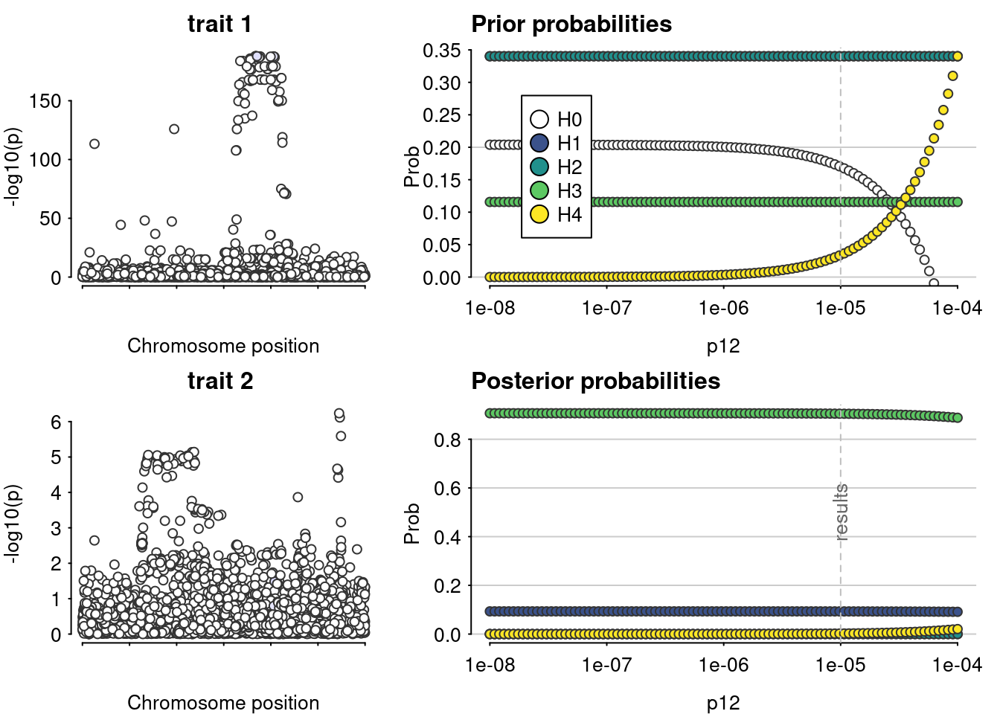

IL6ST
Tea Heikkilä, Emilia Kaiser & Jaakko Koskenniemi
2023-12-01
Last updated: 2024-07-30
Checks: 7 0
Knit directory: 2023-T1DSCREEN/
This reproducible R Markdown analysis was created with workflowr (version 1.7.1). The Checks tab describes the reproducibility checks that were applied when the results were created. The Past versions tab lists the development history.
Great! Since the R Markdown file has been committed to the Git repository, you know the exact version of the code that produced these results.
Great job! The global environment was empty. Objects defined in the global environment can affect the analysis in your R Markdown file in unknown ways. For reproduciblity it’s best to always run the code in an empty environment.
The command set.seed(20220313) was run prior to running
the code in the R Markdown file. Setting a seed ensures that any results
that rely on randomness, e.g. subsampling or permutations, are
reproducible.
Great job! Recording the operating system, R version, and package versions is critical for reproducibility.
Nice! There were no cached chunks for this analysis, so you can be confident that you successfully produced the results during this run.
Great job! Using relative paths to the files within your workflowr project makes it easier to run your code on other machines.
Great! You are using Git for version control. Tracking code development and connecting the code version to the results is critical for reproducibility.
The results in this page were generated with repository version 0af3ea6. See the Past versions tab to see a history of the changes made to the R Markdown and HTML files.
Note that you need to be careful to ensure that all relevant files for
the analysis have been committed to Git prior to generating the results
(you can use wflow_publish or
wflow_git_commit). workflowr only checks the R Markdown
file, but you know if there are other scripts or data files that it
depends on. Below is the status of the Git repository when the results
were generated:
Ignored files:
Ignored: .Rhistory
Ignored: .Rproj.user/
Ignored: IL-6-example.svg
Ignored: IL-6-signaling-infographic-v2-extra-spacing-around-trans.svg
Ignored: IL-6-signaling-infographic-v2.pdf
Ignored: IL-6-signaling-infographic-v2.svg.2024_05_18_21_52_31.0.svg
Ignored: IL-6-signaling-infographic.pdf
Ignored: IL-6-signaling-infographic.png
Ignored: IL-6-signaling-infographic.svg
Ignored: IL6ST-eQTL_coloc-sensitivity.png
Ignored: analyses/figure/
Ignored: data/export_celltypes_harmonized/IL2RA_Spleen_TwoSampleMR.csv
Ignored: data/export_celltypes_harmonized/IL2RA_bin_TwoSampleMR.csv
Ignored: data/export_celltypes_harmonized/IL2RA_bmem_TwoSampleMR.csv
Ignored: data/export_celltypes_harmonized/IL2RA_cd4et_TwoSampleMR.csv
Ignored: data/export_celltypes_harmonized/IL2RA_cd4nc_TwoSampleMR.csv
Ignored: data/export_celltypes_harmonized/IL2RA_cd4sox4_TwoSampleMR.csv
Ignored: data/export_celltypes_harmonized/IL2RA_cd8et_TwoSampleMR.csv
Ignored: data/export_celltypes_harmonized/IL2RA_cd8nc_TwoSampleMR.csv
Ignored: data/export_celltypes_harmonized/IL2RA_cd8s100b_TwoSampleMR.csv
Ignored: data/export_celltypes_harmonized/IL2RA_monoc_TwoSampleMR.csv
Ignored: data/export_celltypes_harmonized/IL2RA_nk_TwoSampleMR.csv
Ignored: data/export_celltypes_harmonized/IL2RA_nkr_TwoSampleMR.csv
Ignored: data/export_celltypes_harmonized/IL6R_Pancreas_TwoSampleMR.csv
Ignored: data/export_celltypes_harmonized/IL6R_Spleen_TwoSampleMR.csv
Ignored: data/export_celltypes_harmonized/IL6R_bin_TwoSampleMR.csv
Ignored: data/export_celltypes_harmonized/IL6R_bmem_TwoSampleMR.csv
Ignored: data/export_celltypes_harmonized/IL6R_cd4et_TwoSampleMR.csv
Ignored: data/export_celltypes_harmonized/IL6R_cd4nc_TwoSampleMR.csv
Ignored: data/export_celltypes_harmonized/IL6R_cd4sox4_TwoSampleMR.csv
Ignored: data/export_celltypes_harmonized/IL6R_cd8et_TwoSampleMR.csv
Ignored: data/export_celltypes_harmonized/IL6R_cd8nc_TwoSampleMR.csv
Ignored: data/export_celltypes_harmonized/IL6R_cd8s100b_TwoSampleMR.csv
Ignored: data/export_celltypes_harmonized/IL6R_dc_TwoSampleMR.csv
Ignored: data/export_celltypes_harmonized/IL6R_monoc_TwoSampleMR.csv
Ignored: data/export_celltypes_harmonized/IL6R_mononc_TwoSampleMR.csv
Ignored: data/export_celltypes_harmonized/IL6R_nk_TwoSampleMR.csv
Ignored: data/export_celltypes_harmonized/IL6R_plasma_TwoSampleMR.csv
Ignored: data/export_celltypes_harmonized/IL6ST_Pancreas_TwoSampleMR.csv
Ignored: data/export_celltypes_harmonized/IL6ST_Spleen_TwoSampleMR.csv
Ignored: data/export_celltypes_harmonized/IL6ST_bin_TwoSampleMR.csv
Ignored: data/export_celltypes_harmonized/IL6ST_bmem_TwoSampleMR.csv
Ignored: data/export_celltypes_harmonized/IL6ST_cd4et_TwoSampleMR.csv
Ignored: data/export_celltypes_harmonized/IL6ST_cd4nc_TwoSampleMR.csv
Ignored: data/export_celltypes_harmonized/IL6ST_cd4sox4_TwoSampleMR.csv
Ignored: data/export_celltypes_harmonized/IL6ST_cd8et_TwoSampleMR.csv
Ignored: data/export_celltypes_harmonized/IL6ST_cd8nc_TwoSampleMR.csv
Ignored: data/export_celltypes_harmonized/IL6ST_cd8s100b_TwoSampleMR.csv
Ignored: data/export_celltypes_harmonized/IL6ST_dc_TwoSampleMR.csv
Ignored: data/export_celltypes_harmonized/IL6ST_monoc_TwoSampleMR.csv
Ignored: data/export_celltypes_harmonized/IL6ST_mononc_TwoSampleMR.csv
Ignored: data/export_celltypes_harmonized/IL6ST_nk_TwoSampleMR.csv
Ignored: data/export_celltypes_harmonized/IL6ST_nkr_TwoSampleMR.csv
Ignored: data/export_celltypes_harmonized/IL6ST_plasma_TwoSampleMR.csv
Ignored: data/export_celltypes_harmonized/NA_NA_TwoSampleMR.csv
Ignored: data/export_celltypes_harmonized/TYK2_Pancreas_TwoSampleMR.csv
Ignored: data/export_celltypes_harmonized/TYK2_Spleen_TwoSampleMR.csv
Ignored: data/export_celltypes_harmonized/TYK2_bin_TwoSampleMR.csv
Ignored: data/export_celltypes_harmonized/TYK2_bmem_TwoSampleMR.csv
Ignored: data/export_celltypes_harmonized/TYK2_cd4et_TwoSampleMR.csv
Ignored: data/export_celltypes_harmonized/TYK2_cd4nc_TwoSampleMR.csv
Ignored: data/export_celltypes_harmonized/TYK2_cd4sox4_TwoSampleMR.csv
Ignored: data/export_celltypes_harmonized/TYK2_cd8et_TwoSampleMR.csv
Ignored: data/export_celltypes_harmonized/TYK2_cd8nc_TwoSampleMR.csv
Ignored: data/export_celltypes_harmonized/TYK2_cd8s100b_TwoSampleMR.csv
Ignored: data/export_celltypes_harmonized/TYK2_dc_TwoSampleMR.csv
Ignored: data/export_celltypes_harmonized/TYK2_monoc_TwoSampleMR.csv
Ignored: data/export_celltypes_harmonized/TYK2_mononc_TwoSampleMR.csv
Ignored: data/export_celltypes_harmonized/TYK2_nk_TwoSampleMR.csv
Ignored: data/export_celltypes_harmonized/TYK2_nkr_TwoSampleMR.csv
Ignored: data/export_celltypes_harmonized/TYK2_plasma_TwoSampleMR.csv
Ignored: data/export_cis_sumstats/eqtl_IL6ST-Gather.rds
Ignored: data/import/
Ignored: figures/IL6R-eQTL-T1D-manhattan.png
Ignored: figures/IL6R-pQTL-T1D-manhattan.png
Ignored: figures/IL6R_eqtl.png
Ignored: figures/IL6R_pqtl.png
Ignored: figures/IL6ST_eqtl.png
Ignored: figures/IL6ST_pqtl.png
Ignored: figures/diagram-sc-analyses.svg
Ignored: figures/gtex_coloc_sensitivity/
Ignored: figures/sc_coloc_sensitivity/
Ignored: submission/
Untracked files:
Untracked: .figure-modifications.swp
Untracked: 21062024 Glucagin manuscript HK_JT.docx
Untracked: Attached file_ 24-0231-Heikkila-ed-EL-KT_vk240724.docx
Untracked: ESM.docx
Untracked: ESMT1Dscreen_vk240724.docx
Untracked: Figure-changes.pdf
Untracked: IL-6-signaling-infographic-v3.pdf
Untracked: IL-6-signaling-infographic-v3.svg
Untracked: README.txt.1
Untracked: Rebuttal.docx
Untracked: STROBE-MR-checklist-fillable(2).docx
Untracked: Supplementary Table X.docx
Untracked: analyses/Tissue-atlas-analyses.Rmd
Untracked: celltypes_scQTL_coloc.tar.gz
Untracked: coloc-sensitivity-IL2RA-cd4eff.png
Untracked: coloc-sensitivity-spleen-IL2RA.png
Untracked: coloc-sensitivity_IL2RA-CD8em.png
Untracked: data/export_LDmat/
Untracked: data/get-data
Untracked: drawing.svg
Untracked: halli.svg
Untracked: input_scQTL_coloc.tar.gz
Untracked: md5sum.txt.1
Untracked: plot_coloc_comb.R
Untracked: sc-results.csv
Untracked: wget-log
Untracked: wget-log.1
Untracked: wget-log.2
Unstaged changes:
Modified: T1DSCREEN.Rproj
Modified: code/00-shell-wget-decompress-T1D-and-eQTLgen
Modified: code/01-Functions.R
Modified: figures/IL2RA.png
Modified: figures/IL2RB.png
Modified: figures/JAK2.png
Modified: figures/JAK3.png
Modified: figures/TYK2.png
Note that any generated files, e.g. HTML, png, CSS, etc., are not included in this status report because it is ok for generated content to have uncommitted changes.
These are the previous versions of the repository in which changes were
made to the R Markdown (analyses/IL6ST.Rmd) and HTML
(docs/IL6ST.html) files. If you’ve configured a remote Git
repository (see ?wflow_git_remote), click on the hyperlinks
in the table below to view the files as they were in that past version.
| File | Version | Author | Date | Message |
|---|---|---|---|---|
| Rmd | 0af3ea6 | Jaakko Koskenniemi | 2024-07-30 | wflow_publish("analyses/IL6ST.Rmd") |
| Rmd | f9ebcc4 | Jaakko Koskenniemi | 2024-07-30 | Added IL6ST_eqtl-coloc, Fixed path to LD matrix, moved packaged loading to functions.R, changed plot_coloc_IL6R() to plot_coloc() |
| Rmd | 932789e | Jaakko Koskenniemi | 2024-05-22 | updated gitignore for export_cis_sumstats and IL6ST.rmd |
| Rmd | a5185fd | Jaakko Koskenniemi | 2024-05-22 | Small nonimportant modifications |
| Rmd | bf23d5f | teehei | 2023-12-04 | Corrected explanations of the code |
| Rmd | 1458f89 | jkoskenniemi | 2023-12-01 | corrected the date |
| html | a4a6c97 | jkoskenniemi | 2023-12-01 | Added all files within docs/ |
| html | e8630b5 | jkoskenniemi | 2023-11-29 | Removed old files |
| Rmd | 99be834 | jkoskenniemi | 2023-11-29 | Updated handling data and data scripts |
| Rmd | 9b9a19e | EmiliaKaiser | 2023-06-26 | functional variants code |
| Rmd | 3f95354 | jkoskenniemi | 2023-06-19 | Updated analysis scripts |
| Rmd | 6d22c1e | EmiliaKaiser | 2023-06-09 | updated gene positions and data |
| Rmd | c8769f4 | EmiliaKaiser | 2023-06-08 | updated analyses |
| Rmd | 5fff409 | jkoskenniemi | 2023-06-06 | Updated analyses scripts |
| html | 84179cf | jkoskenniemi | 2023-05-04 | Build site. |
| html | a4fff74 | jkoskenniemi | 2023-05-04 | Build site. |
| html | 1a5d3d3 | jkoskenniemi | 2023-04-28 | Build site. |
| html | 42a0e48 | Jaakko Koskenniemi | 2023-04-26 | Build site. |
| Rmd | 81d97ca | Jaakko Koskenniemi | 2023-04-26 | First commit |
Load packages and import data
source("code/01-Functions.R")
here::i_am("analyses/IL6ST.Rmd")here() starts at /home/jajoko/Documents/2023-T1DSCREENIL6ST_pqtl <- import_data("data/export_harmonization/IL6ST_prot_anno_TwoSampleMR.csv",
"data/export_harmonization/IL6ST_T1D_TwoSampleMR.csv",
has_beta=TRUE)Harmonising Serum IL6ST level (4vucPG) and Risk of type 1 diabetes (xN25Oe)Removing the following SNPs for incompatible alleles:
rs182261957, rs187213237, rs200972488, rs540674739, rs552947707, rs569821238, rs575416660, rs761734066Removing the following SNPs for being palindromic with intermediate allele frequencies:
rs10043481, rs10070685, rs10940491, rs11739728, rs11742037, rs11745111, rs12055250, rs12153524, rs13161134, rs1423252, rs159717, rs167624, rs17513501, rs1820131, rs1900164, rs191204, rs2032874, rs2112936, rs2194205, rs2194247, rs2408176, rs2548618, rs2564992, rs28585503, rs2910806, rs2910807, rs322017, rs35406319, rs36066329, rs3776038, rs3815915, rs382677, rs387432, rs3910953, rs4242043, rs4472224, rs4493633, rs459150, rs4639171, rs59595173, rs6859116, rs6864386, rs6868733, rs6870110, rs6893219, rs6896174, rs7710924, rs7726350, rs7728670, rs880260Manhattan plots
manhattan_plots(IL6ST_pqtl, gene_start = 55935095, gene_end = 55995022,
title = "IL6ST")
| Version | Author | Date |
|---|---|---|
| a4a6c97 | jkoskenniemi | 2023-12-01 |
IL6ST_pqtl <- IL6ST_pqtl %>% filter(pos.outcome > 55600000 & pos.outcome < 56200000)
manhattan_plots(IL6ST_pqtl, gene_start = 55935095, gene_end = 55995022,
title = "IL6ST")
| Version | Author | Date |
|---|---|---|
| a4a6c97 | jkoskenniemi | 2023-12-01 |
Coloc for pQTL
coloc_IL6ST_pqtl <- analyze_coloc_pqtl(IL6ST_pqtl)PP.H0.abf PP.H1.abf PP.H2.abf PP.H3.abf PP.H4.abf
1.03e-182 9.30e-02 1.01e-181 9.05e-01 2.08e-03
[1] "PP abf for shared variant: 0.208%"Results fail decision rule H4 > 0.7
| Version | Author | Date |
|---|---|---|
| a4a6c97 | jkoskenniemi | 2023-12-01 |
coloc_IL6ST_pqtl$coloc_D1D2Coloc analysis of trait 1, trait 2
SNP Priors p1 p2 p12
1e-04 1e-04 1e-05
Hypothesis Priors H0 H1 H2 H3 H4
0.169878 0.3402 0.3402 0.115702 0.03402
Posterior nsnps H0 H1 H2 H3
3.402000e+03 1.034649e-182 9.299723e-02 1.006779e-181 9.049192e-01
H4
2.083527e-03 #Coloc for eQTL
IL6ST_eqtl <- import_data("data/export_harmonization/IL6ST_eqtl_TwoSampleMR.csv",
"data/export_harmonization/IL6ST_T1D_TwoSampleMR.csv", has_beta = TRUE)Harmonising Whole blood IL6ST gene expression (qs1g78) and Risk of type 1 diabetes (f66Ik5)Removing the following SNPs for being palindromic with intermediate allele frequencies:
rs10043481, rs10044841, rs10940491, rs1423252, rs167624, rs191204, rs2112936, rs2194205, rs2194247, rs2408176, rs322017, rs3776038, rs382677, rs3843462, rs387432, rs4472224, rs459150, rs6864563, rs880260analyze_coloc_eqtl(IL6ST_eqtl)$coloc_resultsPP.H0.abf PP.H1.abf PP.H2.abf PP.H3.abf PP.H4.abf
2.04e-32 2.86e-03 2.04e-31 2.76e-02 9.70e-01
[1] "PP abf for shared variant: 97%"Results pass decision rule H4 > 0.7NULLcoloc_IL6ST_eqtl <- analyze_coloc_eqtl(IL6ST_eqtl)PP.H0.abf PP.H1.abf PP.H2.abf PP.H3.abf PP.H4.abf
2.04e-32 2.86e-03 2.04e-31 2.76e-02 9.70e-01
[1] "PP abf for shared variant: 97%"Results pass decision rule H4 > 0.7
| Version | Author | Date |
|---|---|---|
| a4a6c97 | jkoskenniemi | 2023-12-01 |
str(coloc_IL6ST_eqtl)List of 6
$ test_D1 : NULL
$ test_D2 : NULL
$ coloc_D1D2 :List of 3
..$ summary: Named num [1:6] 4.25e+03 2.04e-32 2.86e-03 2.04e-31 2.76e-02 ...
.. ..- attr(*, "names")= chr [1:6] "nsnps" "PP.H0.abf" "PP.H1.abf" "PP.H2.abf" ...
..$ results:'data.frame': 4253 obs. of 18 variables:
.. ..$ snp : chr [1:4253] "rs10035443" "rs10035560" "rs10035707" "rs10036129" ...
.. ..$ position : int [1:4253] 55565674 55456195 55766695 55539339 56059181 55074403 55319728 55074261 55196687 55089941 ...
.. ..$ pvalues.df1 : num [1:4253] 0.706 0.186 0.793 0.687 0.031 ...
.. ..$ MAF.df1 : num [1:4253] 0.1205 0.0933 0.3016 0.1222 0.2906 ...
.. ..$ N.df1 : int [1:4253] 30901 31569 31684 28050 31684 31684 31684 31684 31240 31569 ...
.. ..$ V.df1 : num [1:4253] 1.53e-04 1.87e-04 7.49e-05 1.66e-04 7.66e-05 ...
.. ..$ z.df1 : num [1:4253] 0.377 1.323 0.262 0.403 2.157 ...
.. ..$ r.df1 : num [1:4253] 0.993 0.992 0.997 0.993 0.997 ...
.. ..$ lABF.df1 : num [1:4253] -2.429 -1.531 -2.82 -2.377 -0.525 ...
.. ..$ pvalues.df2 : num [1:4253] 0.927 0.684 0.00991 0.638 0.00729 0.972 0.988 0.958 0.55 0.953 ...
.. ..$ MAF.df2 : num [1:4253] 0.1205 0.0933 0.3016 0.1222 0.2906 ...
.. ..$ N.df2 : num [1:4253] 520580 520580 520580 520580 520580 ...
.. ..$ V.df2 : num [1:4253] 0.000259 0.000324 0.00013 0.000255 0.000133 ...
.. ..$ z.df2 : num [1:4253] 0.0916 0.407 2.579 0.4705 2.6833 ...
.. ..$ r.df2 : num [1:4253] 0.994 0.992 0.997 0.994 0.997 ...
.. ..$ lABF.df2 : num [1:4253] -2.52 -2.33 0.449 -2.42 0.733 ...
.. ..$ internal.sum.lABF: num [1:4253] -4.949 -3.861 -2.371 -4.797 0.208 ...
.. ..$ SNP.PP.H4 : num [1:4253] 1.49e-39 4.43e-39 1.97e-38 1.74e-39 2.59e-37 ...
..$ priors : Named num [1:3] 1e-04 1e-04 1e-05
.. ..- attr(*, "names")= chr [1:3] "p1" "p2" "p12"
..- attr(*, "class")= chr [1:2] "coloc_abf" "list"
$ D1 :List of 7
..$ type : chr "quant"
..$ pvalues : num [1:4253] 0.706 0.186 0.793 0.687 0.031 ...
..$ N : int [1:4253] 30901 31569 31684 28050 31684 31684 31684 31684 31240 31569 ...
..$ MAF : num [1:4253] 0.1205 0.0933 0.3016 0.1222 0.2906 ...
..$ position: int [1:4253] 55565674 55456195 55766695 55539339 56059181 55074403 55319728 55074261 55196687 55089941 ...
..$ snp : chr [1:4253] "rs10035443" "rs10035560" "rs10035707" "rs10036129" ...
..$ sdY : num 1
$ D2 :List of 7
..$ type : chr "cc"
..$ pvalues : num [1:4253] 0.927 0.684 0.00991 0.638 0.00729 0.972 0.988 0.958 0.55 0.953 ...
..$ N : num 520580
..$ s : num 0.0364
..$ MAF : num [1:4253] 0.1205 0.0933 0.3016 0.1222 0.2906 ...
..$ position: int [1:4253] 55565674 55456195 55766695 55539339 56059181 55074403 55319728 55074261 55196687 55089941 ...
..$ snp : chr [1:4253] "rs10035443" "rs10035560" "rs10035707" "rs10036129" ...
$ sensitivity:'data.frame': 100 obs. of 7 variables:
..$ PP.H0.abf: num [1:100] 2.77e-31 2.76e-31 2.75e-31 2.74e-31 2.73e-31 ...
..$ PP.H1.abf: num [1:100] 0.0912 0.0909 0.0906 0.0903 0.0899 ...
..$ PP.H2.abf: num [1:100] 6.48e-30 6.46e-30 6.44e-30 6.42e-30 6.39e-30 ...
..$ PP.H3.abf: num [1:100] 0.878 0.875 0.872 0.869 0.866 ...
..$ PP.H4.abf: num [1:100] 0.0309 0.0338 0.0369 0.0404 0.0442 ...
..$ p12 : num [1:100] 1.00e-08 1.10e-08 1.20e-08 1.32e-08 1.45e-08 ...
..$ pass : logi [1:100] FALSE FALSE FALSE FALSE FALSE FALSE ...coloc_IL6ST_eqtl$sensitivity PP.H0.abf PP.H1.abf PP.H2.abf PP.H3.abf PP.H4.abf p12
1 2.766612e-31 0.0911614308 6.480809e-30 0.877969504 0.03086907 1.000000e-08
2 2.758674e-31 0.0908878859 6.461362e-30 0.875335012 0.03377710 1.097499e-08
3 2.750016e-31 0.0905895540 6.440153e-30 0.872461798 0.03694865 1.204504e-08
4 2.740579e-31 0.0902643813 6.417036e-30 0.869330082 0.04040554 1.321941e-08
5 2.730300e-31 0.0899101811 6.391855e-30 0.865918803 0.04417102 1.450829e-08
6 2.719112e-31 0.0895246325 6.364446e-30 0.862205612 0.04826976 1.592283e-08
7 2.706942e-31 0.0891052815 6.334634e-30 0.858166871 0.05272785 1.747528e-08
8 2.693716e-31 0.0886495431 6.302235e-30 0.853777685 0.05757277 1.917910e-08
9 2.679356e-31 0.0881547066 6.267056e-30 0.849011949 0.06283334 2.104904e-08
10 2.663779e-31 0.0876179438 6.228897e-30 0.843842424 0.06853963 2.310130e-08
11 2.646900e-31 0.0870363211 6.187548e-30 0.838240854 0.07472282 2.535364e-08
12 2.628632e-31 0.0864068143 6.142796e-30 0.832178118 0.08141507 2.782559e-08
13 2.608884e-31 0.0857263300 6.094419e-30 0.825624420 0.08864925 3.053856e-08
14 2.587566e-31 0.0849917301 6.042195e-30 0.818549538 0.09645873 3.351603e-08
15 2.564586e-31 0.0841998634 5.985900e-30 0.810923125 0.10487701 3.678380e-08
16 2.539853e-31 0.0833476026 5.925312e-30 0.802715059 0.11393734 4.037017e-08
17 2.513278e-31 0.0824318874 5.860212e-30 0.793895868 0.12367224 4.430621e-08
18 2.484777e-31 0.0814497749 5.790392e-30 0.784437210 0.13411302 4.862602e-08
19 2.454269e-31 0.0803984959 5.715655e-30 0.774312414 0.14528909 5.336699e-08
20 2.421680e-31 0.0792755180 5.635821e-30 0.763497091 0.15722739 5.857021e-08
21 2.386945e-31 0.0780786137 5.550731e-30 0.751969788 0.16995160 6.428073e-08
22 2.350012e-31 0.0768059340 5.460254e-30 0.739712696 0.18348137 7.054802e-08
23 2.310839e-31 0.0754560844 5.364291e-30 0.726712388 0.19783153 7.742637e-08
24 2.269401e-31 0.0740282040 5.262781e-30 0.712960569 0.21301123 8.497534e-08
25 2.225692e-31 0.0725220422 5.155705e-30 0.698454828 0.22902313 9.326033e-08
26 2.179724e-31 0.0709380333 5.043096e-30 0.683199347 0.24586262 1.023531e-07
27 2.131531e-31 0.0692773647 4.925036e-30 0.667205561 0.26351707 1.123324e-07
28 2.081171e-31 0.0675420349 4.801669e-30 0.650492718 0.28196525 1.232847e-07
29 2.028727e-31 0.0657348995 4.673197e-30 0.633088320 0.30117678 1.353048e-07
30 1.974309e-31 0.0638597000 4.539886e-30 0.615028402 0.32111190 1.484968e-07
31 1.918049e-31 0.0619210742 4.402066e-30 0.596357630 0.34172130 1.629751e-07
32 1.860109e-31 0.0599245439 4.260130e-30 0.577129183 0.36294627 1.788650e-07
33 1.800674e-31 0.0578764797 4.114530e-30 0.557404417 0.38471910 1.963041e-07
34 1.739951e-31 0.0557840406 3.965775e-30 0.537252279 0.40696368 2.154435e-07
35 1.678168e-31 0.0536550894 3.814424e-30 0.516748496 0.42959641 2.364489e-07
36 1.615571e-31 0.0514980859 3.661080e-30 0.495974543 0.45252737 2.595024e-07
37 1.552420e-31 0.0493219587 3.506375e-30 0.475016410 0.47566163 2.848036e-07
38 1.488981e-31 0.0471359614 3.350969e-30 0.453963220 0.49890082 3.125716e-07
39 1.425530e-31 0.0449495174 3.195532e-30 0.432905727 0.52214476 3.430469e-07
40 1.362340e-31 0.0427720574 3.040733e-30 0.411934759 0.54529318 3.764936e-07
41 1.299679e-31 0.0406128581 2.887232e-30 0.391139658 0.56824748 4.132012e-07
42 1.237809e-31 0.0384808851 2.735666e-30 0.370606773 0.59091234 4.534879e-07
43 1.176975e-31 0.0363846483 2.586642e-30 0.350418058 0.61319729 4.977024e-07
44 1.117409e-31 0.0343320717 2.440721e-30 0.330649834 0.63501809 5.462277e-07
45 1.059320e-31 0.0323303851 2.298418e-30 0.311371727 0.65629789 5.994843e-07
46 1.002894e-31 0.0303860363 2.160191e-30 0.292645837 0.67696813 6.579332e-07
47 9.482951e-32 0.0285046294 2.026439e-30 0.274526136 0.69696924 7.220809e-07
48 8.956599e-32 0.0266908865 1.897497e-30 0.257058102 0.71625101 7.924829e-07
49 8.450992e-32 0.0249486338 1.773637e-30 0.240278586 0.73477278 8.697490e-07
50 7.966985e-32 0.0232808097 1.655069e-30 0.224215885 0.75250330 9.545485e-07
51 7.505181e-32 0.0216894919 1.541940e-30 0.208890013 0.76942050 1.047616e-06
52 7.065944e-32 0.0201759422 1.434339e-30 0.194313119 0.78551094 1.149757e-06
53 6.649423e-32 0.0187406633 1.332303e-30 0.180490046 0.80076929 1.261857e-06
54 6.255561e-32 0.0173834662 1.235818e-30 0.167418974 0.81519756 1.384886e-06
55 5.884124e-32 0.0161035444 1.144826e-30 0.155092134 0.82880432 1.519911e-06
56 5.534722e-32 0.0148995504 1.059232e-30 0.143496551 0.84160390 1.668101e-06
57 5.206829e-32 0.0137696751 9.789078e-31 0.132614799 0.85361553 1.830738e-06
58 4.899808e-32 0.0127117233 9.036963e-31 0.122425738 0.86486254 2.009233e-06
59 4.612933e-32 0.0117231886 8.334198e-31 0.112905227 0.87537158 2.205131e-06
60 4.345405e-32 0.0108013212 7.678828e-31 0.104026785 0.88517189 2.420128e-06
61 4.096373e-32 0.0099431922 7.068771e-31 0.095762204 0.89429460 2.656088e-06
62 3.864954e-32 0.0091457503 6.501857e-31 0.088082095 0.90277215 2.915053e-06
63 3.650239e-32 0.0084058724 5.975866e-31 0.080956382 0.91063775 3.199267e-06
64 3.451316e-32 0.0077204078 5.488559e-31 0.074354719 0.91792487 3.511192e-06
65 3.267271e-32 0.0070862160 5.037702e-31 0.068246861 0.92466692 3.853529e-06
66 3.097207e-32 0.0065001979 4.621092e-31 0.062602961 0.93089684 4.229243e-06
67 2.940244e-32 0.0059593221 4.236575e-31 0.057393824 0.93664685 4.641589e-06
68 2.795527e-32 0.0054606455 3.882058e-31 0.052591104 0.94194825 5.094138e-06
69 2.662232e-32 0.0050013295 3.555523e-31 0.048167462 0.94683121 5.590810e-06
70 2.539570e-32 0.0045786518 3.255035e-31 0.044096682 0.95132467 6.135907e-06
71 2.426786e-32 0.0041900154 2.978748e-31 0.040353752 0.95545623 6.734151e-06
72 2.323166e-32 0.0038329535 2.724907e-31 0.036914913 0.95925213 7.390722e-06
73 2.228032e-32 0.0035051328 2.491854e-31 0.033757695 0.96273717 8.111308e-06
74 2.140745e-32 0.0032043539 2.278025e-31 0.030860914 0.96593473 8.902151e-06
75 2.060706e-32 0.0029285505 2.081952e-31 0.028204670 0.96886678 9.770100e-06
76 1.987353e-32 0.0026757868 1.902259e-31 0.025770320 0.97155389 1.072267e-05
77 1.920162e-32 0.0024442541 1.737659e-31 0.023540444 0.97401530 1.176812e-05
78 1.858642e-32 0.0022322663 1.586953e-31 0.021498804 0.97626893 1.291550e-05
79 1.802340e-32 0.0020382550 1.449027e-31 0.019630294 0.97833145 1.417474e-05
80 1.750831e-32 0.0018607639 1.322846e-31 0.017920890 0.98021835 1.555676e-05
81 1.703726e-32 0.0016984436 1.207450e-31 0.016357594 0.98194396 1.707353e-05
82 1.660660e-32 0.0015500449 1.101951e-31 0.014928376 0.98352158 1.873817e-05
83 1.621299e-32 0.0014144137 1.005529e-31 0.013622122 0.98496346 2.056512e-05
84 1.585335e-32 0.0012904849 9.174259e-32 0.012428572 0.98628094 2.257020e-05
85 1.552482e-32 0.0011772766 8.369444e-32 0.011338271 0.98748445 2.477076e-05
86 1.522477e-32 0.0010738846 7.634414e-32 0.010342509 0.98858361 2.718588e-05
87 1.495080e-32 0.0009794770 6.963256e-32 0.009433276 0.98958725 2.983647e-05
88 1.470068e-32 0.0008932893 6.350534e-32 0.008603208 0.99050350 3.274549e-05
89 1.447238e-32 0.0008146192 5.791256e-32 0.007845542 0.99133984 3.593814e-05
90 1.426402e-32 0.0007428222 5.280839e-32 0.007154070 0.99210311 3.944206e-05
91 1.407389e-32 0.0006773071 4.815082e-32 0.006523098 0.99279959 4.328761e-05
92 1.390042e-32 0.0006175320 4.390132e-32 0.005947408 0.99343506 4.750810e-05
93 1.374217e-32 0.0005630005 4.002459e-32 0.005422219 0.99401478 5.214008e-05
94 1.359782e-32 0.0005132580 3.648831e-32 0.004943153 0.99454359 5.722368e-05
95 1.346615e-32 0.0004678884 3.326292e-32 0.004506201 0.99502591 6.280291e-05
96 1.334607e-32 0.0004265109 3.032133e-32 0.004107697 0.99546579 6.892612e-05
97 1.323657e-32 0.0003887775 2.763880e-32 0.003744289 0.99586693 7.564633e-05
98 1.313672e-32 0.0003543697 2.519269e-32 0.003412910 0.99623272 8.302176e-05
99 1.304567e-32 0.0003229965 2.296233e-32 0.003110758 0.99656625 9.111628e-05
100 1.296266e-32 0.0002943922 2.092880e-32 0.002835271 0.99687034 1.000000e-04
pass
1 FALSE
2 FALSE
3 FALSE
4 FALSE
5 FALSE
6 FALSE
7 FALSE
8 FALSE
9 FALSE
10 FALSE
11 FALSE
12 FALSE
13 FALSE
14 FALSE
15 FALSE
16 FALSE
17 FALSE
18 FALSE
19 FALSE
20 FALSE
21 FALSE
22 FALSE
23 FALSE
24 FALSE
25 FALSE
26 FALSE
27 FALSE
28 FALSE
29 FALSE
30 FALSE
31 FALSE
32 FALSE
33 FALSE
34 FALSE
35 FALSE
36 FALSE
37 FALSE
38 FALSE
39 FALSE
40 FALSE
41 FALSE
42 FALSE
43 FALSE
44 FALSE
45 FALSE
46 FALSE
47 FALSE
48 TRUE
49 TRUE
50 TRUE
51 TRUE
52 TRUE
53 TRUE
54 TRUE
55 TRUE
56 TRUE
57 TRUE
58 TRUE
59 TRUE
60 TRUE
61 TRUE
62 TRUE
63 TRUE
64 TRUE
65 TRUE
66 TRUE
67 TRUE
68 TRUE
69 TRUE
70 TRUE
71 TRUE
72 TRUE
73 TRUE
74 TRUE
75 TRUE
76 TRUE
77 TRUE
78 TRUE
79 TRUE
80 TRUE
81 TRUE
82 TRUE
83 TRUE
84 TRUE
85 TRUE
86 TRUE
87 TRUE
88 TRUE
89 TRUE
90 TRUE
91 TRUE
92 TRUE
93 TRUE
94 TRUE
95 TRUE
96 TRUE
97 TRUE
98 TRUE
99 TRUE
100 TRUEtop_snp <- coloc_IL6ST_eqtl$coloc_D1D2$results[coloc_IL6ST_eqtl$coloc_D1D2$results$SNP.PP.H4 ==
max(coloc_IL6ST_eqtl$coloc_D1D2$results$SNP.PP.H4), ]
top_snp <- top_snp$snp # "rs7731626"#MR
IL6ST_eqtl_rs7731626 <- IL6ST_eqtl %>%
filter(SNP == top_snp)
IL6ST_eqtl_rs7731626 %>%
mutate(Fstat = (beta.exposure/se.exposure)^2) SNP effect_allele.exposure other_allele.exposure effect_allele.outcome
1 rs7731626 A G A
other_allele.outcome beta.exposure beta.outcome eaf.exposure eaf.outcome
1 G -0.1107488 -0.070894 0.3427891 0.354
remove palindromic ambiguous id.outcome pos.outcome pval.outcome se.outcome
1 FALSE FALSE FALSE f66Ik5 56148856 2.56e-06 0.015074
ncase.outcome ncontrol.outcome samplesize.outcome outcome
1 18942 501638 520580 Risk of type 1 diabetes
mr_keep.outcome pval_origin.outcome data_source.outcome pval.exposure
1 TRUE reported textfile 2.0019e-36
chr.exposure pos.exposure samplesize.exposure se.exposure
1 5 55444683 28588 0.008786661
exposure mr_keep.exposure pval_origin.exposure
1 Whole blood IL6ST gene expression TRUE reported
id.exposure data_source.exposure action SNP_index mr_keep Fstat
1 qs1g78 textfile 2 1 TRUE 158.8659mr_IL6ST_rs7731626 <- IL6ST_eqtl_rs7731626 %>%
mr()Analysing 'qs1g78' on 'f66Ik5'generate_odds_ratios(mr_IL6ST_rs7731626) %>%
select(or, or_lci95, or_uci95, pval) %>%
mutate(across(everything(), ~signif(.x, 3))) or or_lci95 or_uci95 pval
1 1.9 1.45 2.48 2.56e-06Regional manhattan plot for eQTL coloc
load("data/export_LDmat/IL6ST_eqtl_LDmat.rda")
plot_coloc(genechr = 5,
fig_start = 55600000,
fig_end = 56200000,
coloc_results = coloc_IL6ST_eqtl$coloc_D1D2,
data = IL6ST_eqtl,
D1 = coloc_IL6ST_eqtl$D1,
D2 = coloc_IL6ST_eqtl$D2,
LDmat = IL6ST)Warning: Using `size` aesthetic for lines was deprecated in ggplot2 3.4.0.
ℹ Please use `linewidth` instead.
This warning is displayed once every 8 hours.
Call `lifecycle::last_lifecycle_warnings()` to see where this warning was
generated.Warning: Removed 1766 rows containing missing values or values outside the scale range
(`geom_point()`).Warning: Removed 1766 rows containing missing values or values outside the scale range
(`geom_label_repel()`).
Removed 1766 rows containing missing values or values outside the scale range
(`geom_label_repel()`).Warning: Removed 1766 rows containing missing values or values outside the scale range
(`geom_point()`).Warning: Removed 1766 rows containing missing values or values outside the scale range
(`geom_label_repel()`).
Removed 1766 rows containing missing values or values outside the scale range
(`geom_label_repel()`).Warning: Removed 1766 rows containing missing values or values outside the scale range
(`geom_point()`).Warning: Removed 1766 rows containing missing values or values outside the scale range
(`geom_label_repel()`).
Removed 1766 rows containing missing values or values outside the scale range
(`geom_label_repel()`).ggsave(filename = "figures/IL6ST_eqtl.png", height = 8, width = 6)
load("data/export_LDmat/IL6ST_pqtl_LDmat.rda")
plot_coloc(genechr = 5,
fig_start = 55600000,
fig_end = 56200000,
coloc_results = coloc_IL6ST_pqtl$coloc_D1D2,
data = IL6ST_pqtl,
D1 = coloc_IL6ST_pqtl$D1,
D2 = coloc_IL6ST_pqtl$D2,
LDmat = IL6ST)ggsave(filename = "figures/IL6ST_pqtl.png", height = 8, width = 6)Functional variants
load("data/export_functional_variants/phenoscanner-entries.RDS")
#Find IL6ST missense variants
IL6ST_missense <- functional_variants$IL6ST$results %>%
filter(consequence == "missense") %>%
distinct(rsid) %>% pull()
IL6ST_missense #rs61748224, rs61755738, rs34417936, rs141500365[1] "rs61748224" "rs61755738" "rs34417936" "rs141500365"#give betas and se for eQTL and T1D risk (note, this is not MR!)
IL6ST_pqtl %>%
filter(SNP %in% IL6ST_missense) %>%
mutate(Fstat = (beta.exposure/se.exposure)^2) %>%
select(SNP, beta.outcome, se.outcome, pval.outcome, beta.exposure, pval.exposure, Fstat) %>%
mutate(across(!matches(c("SNP", "pval.outcome", "pval.exposure")), function(x) signif(x, digits = 2))) SNP beta.outcome se.outcome pval.outcome beta.exposure pval.exposure
<char> <num> <num> <num> <num> <num>
1: rs141500365 0.044 0.220 0.8410 -1.9000 4.74500e-138
2: rs34417936 -0.110 0.049 0.0304 -0.1100 5.78400e-04
3: rs61748224 0.058 0.140 0.6750 -0.3400 7.81400e-04
4: rs61755738 -0.015 0.110 0.8900 0.0077 9.10424e-01
Fstat
<num>
1: 630.000
2: 12.000
3: 11.000
4: 0.013#Select only rs141500365 (as p for its exposure is < 10^-5) and run MR
IL6ST_pqtl_funcvar_mr <- IL6ST_pqtl %>%
filter(SNP %in% c("rs141500365")) %>%
TwoSampleMR::mr_singlesnp() %>%
mutate(exp_b = exp(b),
lo_95 = exp(b - (1.96 * se)),
hi_95 = exp(b + (1.96 * se))) %>%
mutate(across(starts_with(c("b", "se","p", "exp_b", "lo", "hi")), function(x) signif(x, digits = 2)))
IL6ST_pqtl_funcvar_mr %>%
select(-id.exposure, -id.outcome, -samplesize) %>%
knitr::kable()| exposure | outcome | SNP | b | se | p | exp_b | lo_95 | hi_95 |
|---|---|---|---|---|---|---|---|---|
| Serum IL6ST level | Risk of type 1 diabetes | rs141500365 | -0.023 | 0.11 | 0.84 | 0.98 | 0.78 | 1.2 |
| Serum IL6ST level | Risk of type 1 diabetes | All - Inverse variance weighted | NA | NA | NA | NA | NA | NA |
| Serum IL6ST level | Risk of type 1 diabetes | All - MR Egger | NA | NA | NA | NA | NA | NA |
sessionInfo()R version 4.4.0 (2024-04-24)
Platform: x86_64-pc-linux-gnu
Running under: Ubuntu 22.04.4 LTS
Matrix products: default
BLAS: /usr/lib/x86_64-linux-gnu/openblas-pthread/libblas.so.3
LAPACK: /usr/lib/x86_64-linux-gnu/openblas-pthread/libopenblasp-r0.3.20.so; LAPACK version 3.10.0
locale:
[1] LC_CTYPE=en_US.UTF-8 LC_NUMERIC=C
[3] LC_TIME=en_US.UTF-8 LC_COLLATE=en_US.UTF-8
[5] LC_MONETARY=en_US.UTF-8 LC_MESSAGES=en_US.UTF-8
[7] LC_PAPER=en_US.UTF-8 LC_NAME=C
[9] LC_ADDRESS=C LC_TELEPHONE=C
[11] LC_MEASUREMENT=en_US.UTF-8 LC_IDENTIFICATION=C
time zone: America/New_York
tzcode source: system (glibc)
attached base packages:
[1] stats graphics grDevices utils datasets methods base
other attached packages:
[1] RACER_1.0.0 reshape2_1.4.4 ggrepel_0.9.5 viridis_0.6.5
[5] viridisLite_0.4.2 scales_1.3.0 here_1.0.1 rio_1.0.1
[9] ieugwasr_1.0.0 ggpubr_0.6.0 TwoSampleMR_0.6.2 coloc_5.2.3
[13] data.table_1.15.4 lubridate_1.9.3 forcats_1.0.0 stringr_1.5.1
[17] dplyr_1.1.4 purrr_1.0.2 readr_2.1.5 tidyr_1.3.1
[21] tibble_3.2.1 ggplot2_3.5.1 tidyverse_2.0.0 workflowr_1.7.1
loaded via a namespace (and not attached):
[1] tidyselect_1.2.1 farver_2.1.2 fastmap_1.2.0 reshape_0.8.9
[5] pacman_0.5.1 promises_1.3.0 digest_0.6.35 timechange_0.3.0
[9] lifecycle_1.0.4 processx_3.8.4 magrittr_2.0.3 compiler_4.4.0
[13] rlang_1.1.4 sass_0.4.9 tools_4.4.0 utf8_1.2.4
[17] yaml_2.3.8 knitr_1.47 ggsignif_0.6.4 labeling_0.4.3
[21] plyr_1.8.9 abind_1.4-5 withr_3.0.0 grid_4.4.0
[25] fansi_1.0.6 susieR_0.12.35 git2r_0.33.0 colorspace_2.1-0
[29] cli_3.6.2 rmarkdown_2.27 crayon_1.5.2 ragg_1.3.1
[33] generics_0.1.3 rstudioapi_0.16.0 httr_1.4.7 tzdb_0.4.0
[37] cachem_1.1.0 matrixStats_1.3.0 vctrs_0.6.5 Matrix_1.6-5
[41] jsonlite_1.8.8 carData_3.0-5 car_3.1-2 callr_3.7.6
[45] hms_1.1.3 mixsqp_0.3-54 rstatix_0.7.2 irlba_2.3.5.1
[49] systemfonts_1.0.6 jquerylib_0.1.4 glue_1.7.0 ps_1.7.6
[53] cowplot_1.1.3 stringi_1.8.4 gtable_0.3.5 later_1.3.2
[57] munsell_0.5.1 pillar_1.9.0 htmltools_0.5.8.1 R6_2.5.1
[61] textshaping_0.3.7 rprojroot_2.0.4 evaluate_0.24.0 lattice_0.22-5
[65] highr_0.11 backports_1.5.0 broom_1.0.6 httpuv_1.6.15
[69] bslib_0.7.0 Rcpp_1.0.12 gridExtra_2.3 whisker_0.4.1
[73] xfun_0.44 fs_1.6.4 getPass_0.2-4 pkgconfig_2.0.3